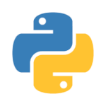
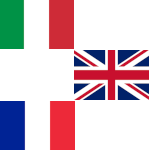

Curriculum Vitae
The latest version can be downloaded here
- 300+ hours Accepted PI time
- 15 nights Service mode observations
- 7 First-author Publications
- 
- 
Current position
- 2023 - present Postdoctoral researcher at Leiden Observatory, Leiden, Netherlands
- 2024 - present Research Associate at the Institut de Recherche en Astrophysique et Planétologie (IRAP), Toulouse, France
Education
- 2022 - 2023 Visiting researcher at European Science and Technology Research Centre (ESTEC-ESA)
- 2020 - 2023 Ph.D. in Astronomy at the Institut de Recherche en Astrophysique et Planétologie (IRAP), Université Toulouse III - Paul Sabatier, Toulouse, France
- 2017 - 2019 MSc in Astrophysics, Niels Böhr Institute, University of Copenhagen, Denmark
- 2013 - 2017 BSc in Physics, Physics Department, University of Pavia, Italy
Grants, Studentships and Awards
- External Subsidy 'Kennis en Cultuur' (Knowledge and Culture) provided by Leiden Municipality in order to run Astronomy on Tap
- Co-I of 3.5-year NWO Grant of the "Open Competition Domain Science-M", financed by the Dutch Research Council
- 4-month ESA Faculty Grant to work at Leiden Observatory in summer 2023
- 1.5-year ESA Visitor Grant at ESTEC in Noordwijk, Netherlands
- 1.5-year studentship at ESO Headquarters in Garching, Germany (refused)
- Best talk at the 'Ph.D. day 2021' in Toulouse, France
Teaching Experience
- Oct 2024 - present Lecture about ‘Stellar Structure and Evolution’ within Astronomy4All program (for high school teachers), Utrecht, Netherlands
Responsibilities
- Sep 2024 - present Member of the Science Team of the Terra Hunting Experiment consortium
- Jun 2024 Organiser of the splinter session 'Exoplanet Space Weather around Cool stars' at CoolStars 22 conference in San Diego, California, USA.
- Nov 2023 - present Organiser of the Leiden/ESA Astrophysics Program for Summer Students (LEAPS) at Leiden Observatory
- Sep 2023 - present Coordinator of the outreach event 'Astronomy on Tap' in Leiden
- Sep 2023 - Jul 2024 Organiser of the Equity, Diversity, and Inclusion journal club at Leiden Observatory
- Sep 2023 - present Member of the Equity, Diversity, and Inclusion committee at Leiden Observatory
- Apr 2023 - present Referee for the Astrophysical Journal
- Feb 2022 - Feb 2023 Member of the Local Organising Committee for the Planet ESLAB 2023 Symposium at ESA-ESTEC
- Apr 2022 Co-chair of the Holland-Area Exoplanet Science Meeting (HAESM) at ESA-ESTEC
- Dec 2020 - May 2021 Organiser of 'Ph.D. Day 2021' event at IRAP, Toulouse
- Sep 2020 - Dec 2020 Editor of the 'Newcomer's Guide at IRAP'
Observing Experience
- coPI of SPIRou@Canada-Hawaii-France proposal Telescope for 10.4 hours in semester 2024A
- coPI of SPIRou@Canada-Hawaii-France proposal Telescope for 7.1 hours in semester 2024A
- coPI of SPIRou and ESPaDOnS@Canada-Hawaii-France Telescope proposal for 38.7 hours in semester 2024A
- PI of SPIRou@Canada-Hawaii-France proposal Telescope for 1.6 hours in semester 2024A
- PI of two NEO-NARVAL@Telescope Bernard-Lyot proposals for 40.0 and 18.6 hours in semester 2023B
- PI of SPIRou and ESPaDOnS@Canada-Hawaii-France Telescope proposal for 30.1 hours in semester 2023B
- PI of NEO-NARVAL@Telescope Bernard-Lyot proposal for 29.6 hours in semester 2023A
- PI of SPIRou and ESPaDOnS@Canada-Hawaii-France Telescope proposal for 35.9 hours in semester 2023A
- PI of HARPS-Pol@ESO 3.6-m Telescope proposal for 16 hours in semester P110
- PI of SPIRou and ESPaDOnS@Canada-Hawaii-France Telescope proposal for 26.7 hours in semester 2022B
- PI of SPIRou@Canada-Hawaii-France Telescope proposal for 7.2 hours in semester 2021B
- PI of NEO-NARVAL@Telescope Bernard-Lyot proposal for 119.8 hours in semester 2021A
- Nov 2021 Visitor mode operation for eight nights at Telescope Bernard-Lyot
- Aug 2018 MSc course "Observational Astronomy": observing, data reduction with IRAF and analysis for seven nights at Nordic Optical Telescope, La Palma, Spain
Languages
- Italian : Native
- English : Fluent
- French : B1
- Dutch : A1